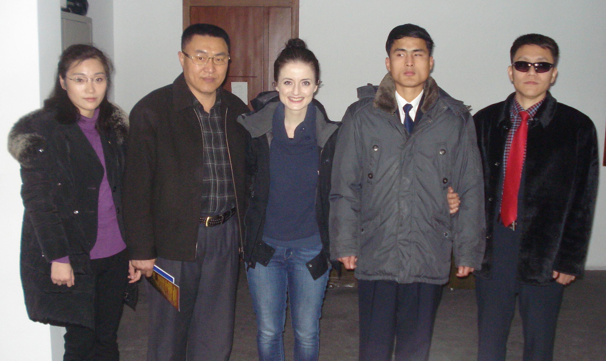

Disability & Technology in the DPRK
People with Vision Impairment
The Korea Economic and Cultural Centre for Deaf and Blind (KECCDB) in Pyongyang
Korean Economic and Cultural Centre for Deaf and Blind (KECCDB) is a unique deaf and blind-concerned organisation, which aim is to improve economic and cultural activities of the deaf and blind people in the DPRK. The KECCDB was established in December 2012 as an affiliated body of the Korean Federation for Protection of the Disabled (KFPD), and includes several sub-organisations, such as the Blind Association of Korea (BAK), Deaf Association of Korea (DAK), Deaf Football Korea (DFK), and Wood-processing Workshop of the Deaf (WPWD). It also facilitates a deaf kindergarten, provides sign language interpreters’ course, and coordinates all deaf- and blind-concerned affairs in the DPRK.[22]



KwangMyong Printing House for Blind People
KwangMyong Printing House is a unique and the only producer of the written
text in the Braille language that supplies partially and fully blind people with
paper books across the DPRK.


People with Hearing Impairment
The Korea Economic and Cultural Centre for Deaf and Blind (KECCDB) in Pyongyang


Sambong School for Deaf in Onsong County